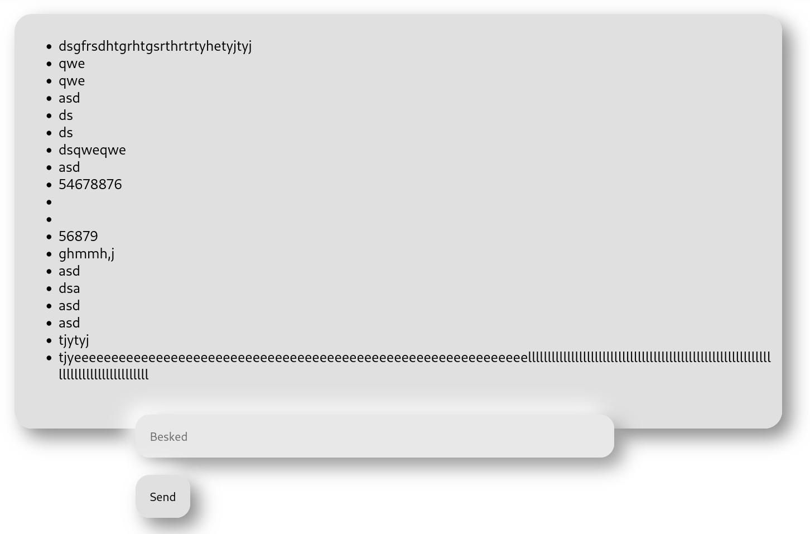
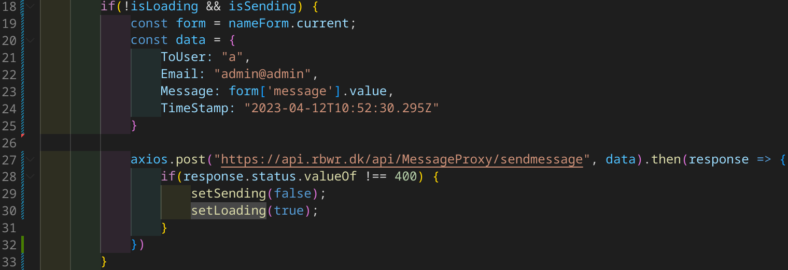

React Beskedside
Det har taget noget tid, men nu har jeg fået sat en enkel side op, hvor man kan skrive med andre. Lige nu er det hardcoded, hvem der kan skrives med, men selve funktionaliteten er der. Som set i billedet under, har vi en simpel side, hvor man kan se beskeder (ændringer til siden kan forekomme senere). Når man åbner siden, bliver alle ens beskeder hentet fra min microservice. Hvorefter man kan skrive en besked, og trykke send, hvorefter den ville dukke op i listen.

Som på billedet under, kan vi se metoden, hvor vi sender beskederne. Lige nu, så er alle data hardcoded, ud over
selve beskeden. Når man trykker på send knappen, vi værdien isSending blive sat til true,
hvor resten af koden kan blive ramt, og sende beskeden. På linje 27 sender vi selve dataen til min microservice
der lytter på subdomænet "api" til min blogside "rbwr.dk". Hvorefter at vi får et svar tilbage, sætter vi
isSending til at være false, og isLoading til at være true
Det gør vi, så koden som henter beskederne kan blive ramt igen.

Koden som henter beskederne er igen lidt hardcoded, men det vil blive ændret snart. setTempMessage er
et array, som indeholder alle beskeder sendt, i dette tilfælde, til bruger "a".
Som set på linje 56, køre vi en metode SetSendingTrue, når knappen bliver trykket. Den gøre, det som
er blevet beskrevet længere oppe i dette blogopslag, så beskederne kan blive hentet. På linje 51 køre vi en metode,
der laver alle beskederne fra tempMessage om til HTML <li></li> liste elementer,
som bliver vist på det øverste billede.
Det er egentlig meget ligetil. På linje 5 tager jeg array dataen fra tempMessage, og ligger det ind i et array.
Grunden til det er, at hvis man bruger variabler fra en parameter, som vil datatypen være any, som jeg ikke
rigtig kan bruge i den form. Det er stadig tæknisk et array, da dataen i tempMessage er i array format, i
den klasse, som kalder metoden MessageHandler.
Fra linje 7 til 9 har vi et for loop, hvor vi læser dataen i arrayet, og ligger det ind i liste elementet. Når det er gjort, så returnere vi arrayet med liste elementer.